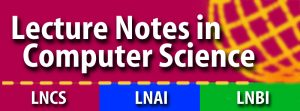
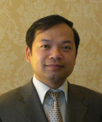
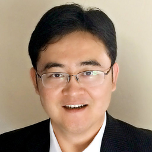
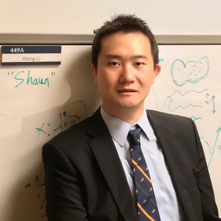

Workshop Updates
April 5th: Submission portal is now open.
Inivtation letter for MMMI'19 is now available for downloading here
Workshop schedule is now online. This year we have the pleasure of inviting from joined us for his keynote speech on "".
We are offering multiple Best Paper Awards and Student Paper Awards, thanks to the support from our sponsors!
Because of this, submission deadline has been extended to August 7th.
Scope
The International Workshop on Multiscale Multimodal Medical Imaging (MMMI) aims at tackling the important challenge of acquiring and analyzing medical images at multiple scales and/or from multiple modalities, which has been increasingly applied in research studies and clinical practice. MMMI offers an opportunity to present: 1) techniques involving multi-modal image acquisition and reconstruction, or imaging at multi-scales; 2) novel methodologies and insights of multiscale multimodal medical images analysis, including image fusing, multimodal augmentation, and joint inference; and 3) empirical studies involving the application of multiscale multimodal imaging for clinical use.
Objective
Facing with the growing amount of data available from multiscale multimodal medical imaging facilities and a variety new method for the image analysis developed so far, the MMMI workshop aims to move forward the state of the art in multiscale multimodal medical imaging, including both algorithm development, implementation of methodology, and experimental studies. The workshop also aims to facilitate more communications and interactions between researchers in the field of medical image analysis and the field of machine learning, especially expertise in data fusion, multi-fidelity methods, and multi-source learning.
Topics
Topic of submissions to the workshop include, but not limited to:
Image segmentation techniques based on multiscale multimodal images.
Novel techniques in multiscale multimodal image acquisition and reconstruction.
Registration methods across multiscale multimodal images.
Fusion of images from multiple resolutions and novel visualization methods.
Spatial-temporal analysis using multiple modalities.
Fusion of image sources with different fidelities: e.g., co-analysis of EEG and fMRI.
Multiscale multimodal disease classification and prediction using supervised or unsupervised methods.
Atlas-based methods on multiple imaging modalities.
Cross-modality image generative methods: e.g., generation of synthetic images between CT and MR.
Novel radiomics methods based on multiscale multimodal imaging.
Shape analysis on images from multiple sources and/or multiple resolutions.
Graph methods in medical image analysis.
Benchmark studies for multiscale multimodal image analysis: e.g., using electrophysiological signals for validation of fMRI data.
Multi-view machine learning for cancer diagnosis and prognosis.
Integrated radiology, pathology, genomics analysis via learning algorithms.
New image biomarker identification through multiscale multimodal data.
History of MMMI
The 1st International Workshop on Multiscale Multimodal Medical Imaging (MMMI 2019) mmmi2019.github.io recorded 80 attendees and received 18 full-pages submissions, with 13 accepted and presented. The theme of MMMI 2019 is on the emerging techniques for imaging and analyzing multi-modal multi-scale data. The 2nd MMMI workshop was merged with MLCDS 20201 mcbr-cds.org, which recorded 58 attendees and received 16 full-pages submissions, with 10 accepted and presented. The theme of MLCDS 2021 was on the role and prospect of multi-modal multi-scale imaging in clinical practice. As multi-modal multi-scale medical imaging is a fast-growing field, we are here continuing the MMMI workshop to provide a platform for presenting and discussing novel research from both the radiology and computer science community. In MMMI 2022 we will emphasize the current research and vision on the concept of “multi-scale”, as the field has been recognizing the importance of medical images across scales for the potential of more comprehensive and holistic understanding of the imaging target.
Cooperating Organization

Workshop Schedule
TBD
October 13 12:30-16:30 Madrid 3
12:30-12:45 Welcome message and briefing on the multi-modal, multi-scale medical imaging analysis
12:45-1:30 Keynote Talk: Prof. Jinyi Qi: Pushing the temporal resolution of dynamic PET using multiscale information and the EXPLORER total-body PET scanner
https://qilab.bme.ucdavis.edu/
Jinyi Qi received his B.S. degree in Electrical Engineering in 1993 from Tsinghua University, Beijing, China, and his Ph.D. degree in Electrical Engineering in 1998 from the University of Southern California. He is now a Professor in the Department of Biomedical Engineering at UC Davis, where he served as the Interim Department Chair from 2015 to 2016. Dr. Qi has been an Associate Editor of IEEE Transactions on Medical Imaging since 2006 and is an elected Fellow of AIMBE and IEEE. His research interests include statistical image reconstruction, medical image processing, image quality evaluation, and imaging system optimization.
Oral Presentation
1:30-1:50 O-MMMI-1: Multi-Modal Image Prediction via Spatial Hybrid U-Net Akib Zaman, Lu Zhang, Jingwen Yan, Dajiang Zhu
Organization
Quanzheng Li
Associate Professor, Department of Radiology, Harvard Medical School and Massachusetts General Hospital, Boston, MA
Email: li.quanzheng@mgh.harvard.edu
Richard Leahy
Deans Professor, Electrical Engineering-Systems, Biomedical Engineering, and Radiology, University of Southern California, Los Angeles, CA
Email: leahy@sipi.usc.edu

Bin Dong
Associate Professor, Beijing International Center for Mathematical Research (BICMR), Peking University, Beijing, China
Email: dongbin@math.pku.edu.cn
 Yuankai Huo
Yuankai Huo
Assistant Professor, School of Engineering, Vanderbilt University, Nashville, TN
Email: yuankai.huo@vanderbilt.edu
 Jinglei Lv
Jinglei Lv
Senior Lecturer, School of Biomedical Engineering, University of Sydney, Sydney, Australia
Email: jinglei.lv@sydney.edu.au
Xiang Li
Instructor, Department of Radiology, Harvard Medical School and Massachusetts General Hospital, Boston, MA
Email: xli60@mgh.harvard.edu